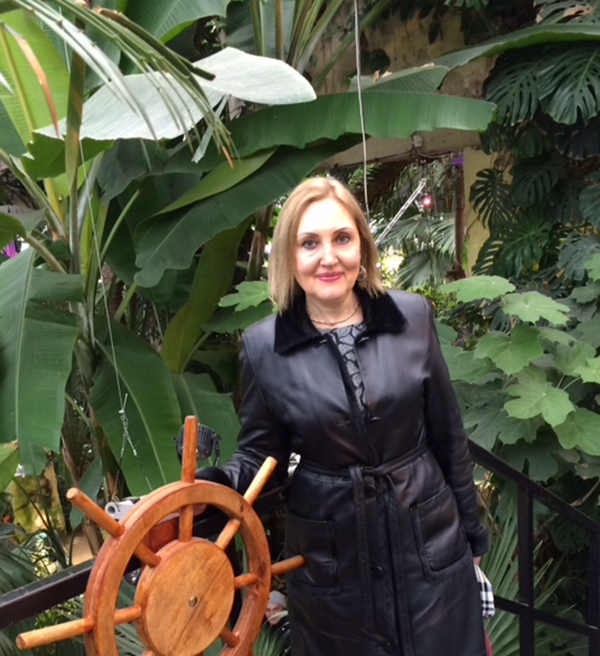

Чувствую гордость и ответственность — Ирина Гордеева об участии в проекте
22.08.2018— Ирина Витальевна, расскажите о себе. Кто вы по профессии, чем увлекаетесь, что радует вас в жизни?
— Раньше я работала логопедом в детском саду. Сейчас на пенсии, занимаюсь частной практикой. Люблю рукодельничать, спортивные развлечения – коньки, лыжи. Обожаю общаться с внуками: с ними не усидишь на месте, приходится быть активной.
— Помните, как и когда познакомились с проектом «Активный гражданин»?
— Начну издалека. Я родилась и долгое время жила в Норильске. А в 2014 году решили всей семьей перебраться в Москву. Купили квартиру в поселении Московское и переехали. И вот когда я начала знакомиться с окрестностями, обратила внимание, что кое-где были переходы неудобные, какие-то ограждения ненужные. Думала, ну куда бы написать, куда бы обратиться? Не чтобы пожаловаться. Может, люди привыкли и не обращают внимания на все эти неудобства. И как-то на канале «Москва 24» услышала про проект «Активный гражданин», где люди могут высказывать свое мнение, в том числе по благоустройству города. Я нашла в интернете этот проект и зарегистрировалась. Стала участвовать во всех голосованиях, изучать город, узнавать Москву.
— Вы нашли возможность высказаться, какие-то предложения внести с помощью проекта «Активный гражданин»?
— Вы знаете, возможно, это совпадение или в целом тенденция последних лет, но в том же Московском у нас начали реконструировать дороги, строить пешеходные переходы, удобные для людей. Стало все меняться. Я, конечно, писала и в «Активный гражданин», вносила свои предложения, надеюсь, и это тоже повлияло.
— Что вам больше всего нравится в проекте «Активный гражданин»?
— Мне нравится все. Во-первых, из голосований я узнаю о том, что происходит в Москве. Для меня это своеобразное знакомство, появляется понимание, чем живет город. Я всегда читаю мнения экспертов. Особенно, если я чего-то не знаю или в том месте не была. После я стараюсь там побывать, посмотреть самой. Стараюсь осознанно голосовать. Опираясь на мнение экспертов, я пытаюсь сделать свой выбор. Во-вторых, приятно, что к нашему мнению прислушиваются. Для меня это ответственность. Я всегда смотрю на результаты голосований, и очень приятно, когда мое мнение совпадает с мнением большинства. Значит, так, как я, думают и другие жители Москвы.
— Какие темы голосований вам нравятся больше всего? Есть какие-то направления, в которых вы заинтересованы?
— У меня дети живут на юге Москвы, и меня очень интересует тема транспортной доступности. Сейчас строится Большая кольцевая линия, и я жду не дождусь, когда она будет запущена. Чтобы нам почаще видеться. Вторая тема, которая меня волнует, — это озеленение города. Московский стал развиваться в этом плане: у нас высаживаются деревья, проводятся субботники. Я тоже стараюсь в них участвовать — и в посадке новых деревьев, и в уборке города. Стараюсь жить активно, потому что я считаю, что это наша внутренняя культура, и нужно не только делать замечания окружающим, но и самой брать и решать проблемы по мере возможности. Я люблю чистоту, чтобы все было красиво. А чисто – там, где не сорят, это должны понимать все люди.
— Вы уже почти 4 года в «Активном гражданине», значит, можете отслеживать в динамике, каких результатов мы добились по итогам голосований. Как вы оцениваете итоги нашей общей работы?
— Я помню, что принимала участие в голосовании по «Моей улице», в частности, по благоустройству Якиманской набережной. Потом я гуляла по центру и видела, как на набережной действительно все сделано красиво, эстетично, со вкусом. Там раньше машины ездили, а сейчас там спокойно, удобно для пешеходов. Мы с дочерью и с внуками там гуляли — ну просто прекрасно: есть места для того, чтобы посидеть, отдохнуть, парк рядом.

— Что в такие моменты вы чувствуете?
— Чувствую гордость, что и моя лепта внесена. Чувствую ответственность, потому что это сделано для удобства, и с этим придется жить нашим внукам и детям.
— Как вы распоряжаетесь накопленными в проекте баллами?
— У меня около шести тысяч баллов уже накопилось. Пока я еще ни разу не тратила. Я посматриваю на сувенирную продукцию — мне нравятся кружки, термобанки. Думала еще, что вот внуки подрастут немного, и можно будет с ними в театр сходить, приобрести билеты в «Магазине поощрений».
— А можно ли сказать, что вы с «Активным гражданином» стали больше узнавать о том, что происходит в городе?
— Конечно! Кстати, только благодаря проекту это и происходит. Я всегда читаю все новости в «Активном гражданине» и своих родных просвещаю. Дети заняты работой, свободного времени у них мало. Сами они не участвуют пока в проекте, поэтому они у меня спрашивают, и я с удовольствием делюсь, рассказываю им.
— Как вы считаете, почему важно приобщать все больше людей к участию в проекте?
— Чем больше людей, тем больше мнений, тем мощнее сила народная. Я считаю, что голосовать по вопросам должны не только молодые люди, но и люди зрелого возраста. Потому что у всех разный жизненный опыт, разные взгляды на жизнь, на вещи, которые нас окружают, на быт, на то, как мы понимаем комфорт и удобство. Потому и приоритеты у всех разные.
— Ирина Витальевна, за что вы любите Москву? Есть у вас любимые места в городе?
— Любимые места — это центр города, очень нравятся парки Коломенское и Царицыно. Люблю Воробьевы горы, они недалеко от нас. Когда гуляю по улицам, я представляю себе старинные времена, как там кто-то гулял. Если какие-то таблички есть, обязательно читаю, а потом рассказываю подружкам из других городов.
— Что пожелаете Москве?
— Пожелаю дальнейшего процветания, чтобы Москва оставалась такой же гостеприимной, красивой и цветущей. Чтобы все жители были внимательны к городу, соблюдали чистоту и порядок в нем, чтобы относились друг к другу со вниманием и уважением.